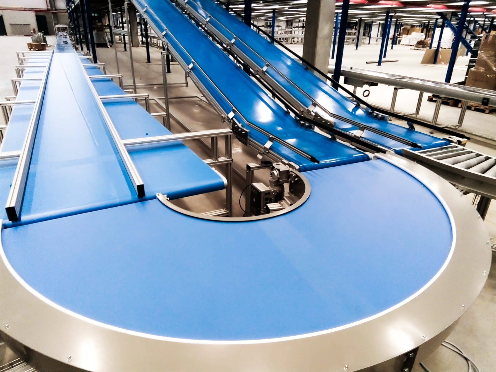

Sistemas de transporte mediante banda para manejo de materiales ligeros y medianos.
Diseño adaptable a diferentes procesos industriales.
Bajo mantenimiento y alta eficiencia operativa.
✔ Diseño y fabricación
✔ Instalación y puesta en marcha
✔ Mantenimiento y ajustes
✔ Integración con sistemas automatizados
Empaque, logística, alimentos, manufactura y líneas de producción.